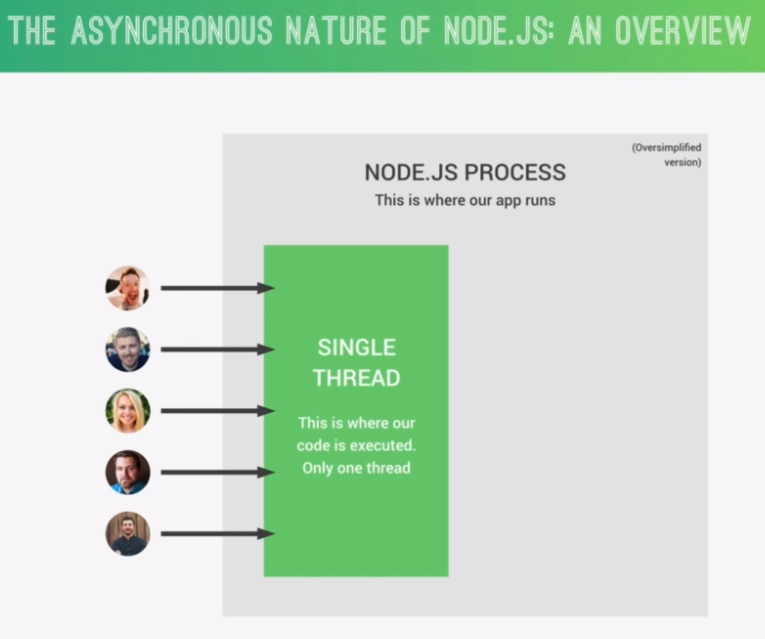
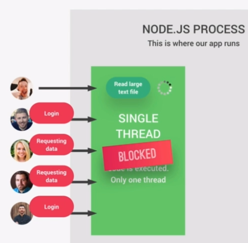
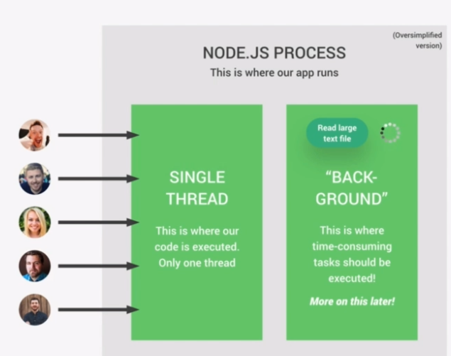

Node.js is single threaded (only 1 process running).
All users accessing your app are accessing the same thread.
This means if a user blocks a thread, all other users must wait until its execution finishes.
With asynchronous code, the users are not blocked in a single thread since the longer running process is executing in the background.
When finished exeucting in the background, a callback function is run.
Node has several dependencies, but the most important are:
The V8 engine is what converts JavaScript code into machine code that a computer can actually understand.
But, that alone is not enough to create a whole server side framework like Node.
V8 is Written in JavaScript and C++.
libuv is needed in addition to V8 to create the server side framework. libuv is an open source library with a strong focus on asynchronous IO.
This layer is what gives Node access to the underlying computer operating system, file system, networking, and more.
libuv also implements two extremely important features of Node.JS
libuv is completely written in C++.
Node runs a single process.
In this process, Node runs a single thread which can be thought of as a sequence of instructions.
When the program is initialized, all the top level code is executed, which means all the code that is not inside any callback function. Also, all the modules that your app needs are required and all the callbacks are registered.
Then, the Event Loop starts running. The event loop is where most of the work is done in your app. So, it's really the heart of the entire Node architecture.
Some tasks are too heavy to be executed in the event loop because they would then block the single thread. That's where the thread pool comes in, which just like the event loop, is provided to Node.js by the libuv library.
Node automatically offloads blocking operations into the thread pool, where they don't block the event loop.
The event loop is the heart of the Node architecture. It is where all the application code that is inside callback functions is executed. So, all code that is not top level code will run in the event loop.
The Event Loop is what makes asynchronous programming possible in Node.js, making it the most important feature in Node's design and making Node.js completely different from other platforms.
It takes care of all incoming events and performs orchestration by offloading heavier tasks into the thread pool, and doing the most simple work itself.
Node uses Event-Triggered-Architecture.
As soon as an event completes, the Event Loop picks them up and calls their callback functions.
It's often said that the event loop does the orchestration, which simply means that it receives events, calls their callback functions, and offloads the more expensive tasks to the thread pool.
It's very important for you to correctly understand the event loop so that you can write your own performing code and also debug your own code when something goes wrong in an unexpected way.
The Event Loop is also needed because in Node.js everything works in one single thread, so you can have thousands or millions of users accessing the same thread at the same time. This makes Node so lightweight and scalable, but at the same time, it comes with the danger of blocking our single thread, which would make the entire app slow or even stop for all your users accessing the app.
When an application starts, the event loop starts running right away. The event loop has multiple phases, and each phase has a callback queue, which are the callbacks coming from the events that the event loop receives.
The first phase takes care of callbacks of expired timers, for example, from the setTimeout() function. If there are callback functions from timers that just expired, these are the first ones to be processed by the Event Loop.
If a timer expires later during the time when one of the other phases are being processed, then the callback of that timer will only be called as soon as the event loop comes back to this first phase.
Polling means looking for new I/O events that are ready to be processed and putting them into the callback queue.
I/O means stuff like networking and file access,so it's in this phase where 99% of code gets executed.
This is because in a typical Node app, the bulk of what needs to get done is related to networking and also, file accessing.
setImmediate is a special kind of timer that processes callbacks immediately after the I/O polling and execution phase.
In this phase, all close events are processed, for example, for when a web server or a WebSocket shut down.
If there are any callbacks in one of these two queues to be processed, they will be executed right after the current 4 phases of the Event Loop finishes.
Used for advanced use cases.
Used for resolved promises.